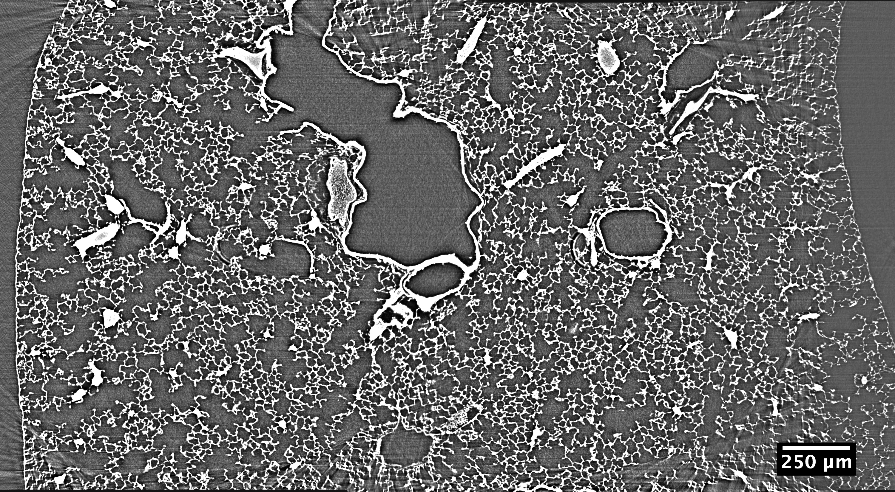
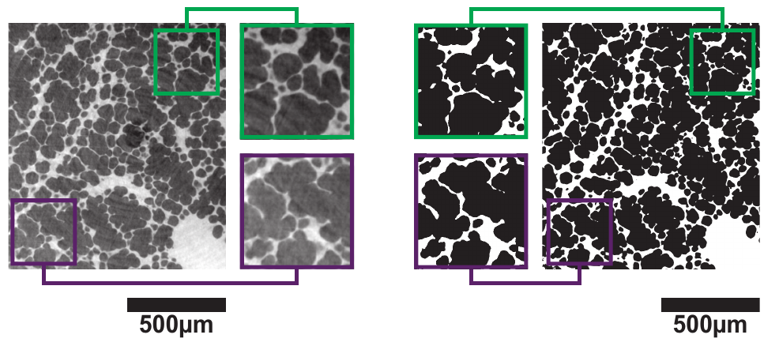
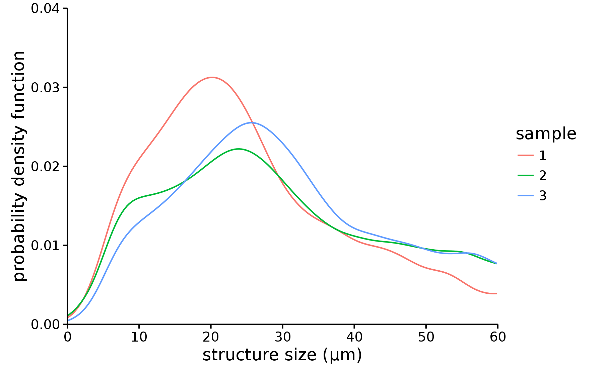
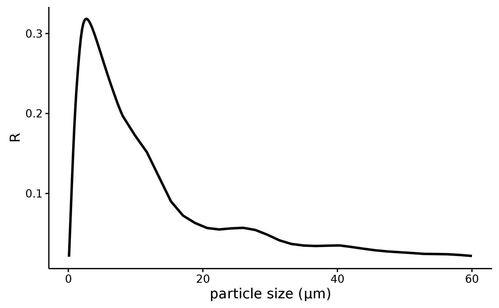

Dark field of lung microstructures from synchrotron micro CT to a table top setup
From monochromatic beam and single sizes to a lung model
\(B = v / v_0 = \exp (-\mu_B t)\)
Sample made of identical spheres of the same material \(\mu_B(r, E; n, f)\) studied in recent literature:
- \(r\) radius of the spheres
- \(E\) beam energy
- \(n\) refractive index
- \(f\) volume fraction occupied by the spheres
Literature links
- Yashiro et al. (2010) On the origin of visibility contrast in x-ray Talbot interferometry
- Lynch et al. (2011) Interpretation of dark-field contrast and particle-size selectivity in grating interferometers
- Gkoumas et al. (2016) A generalized quantitative interpretation of dark-field contrast for highly concentrated microsphere suspensions
we used the latest for which we have the code
Polychromatic extension
\[ \mu_B = \int_{\text{radii}}\int_{\text{energies}} \mu(r, E; n, f)\rho(r)s(E)\mathop{dr}\mathop{dE} \]
| input | description | source |
|---|---|---|
| \(s(E)\) | source spectrum | simulation |
| \(n\) | refractive index | NIST database |
| \(f\) | volume fraction occupied by spheres | microtomography |
| \(\rho(r)\) | distribution of sphere sizes | microtomography |
Consistency check: integrating over energies only

Estimating \(n\) and \(f\)
- \(n\): NIST database with density matching beamline absorption at 12 keV
- \(f\): pixel counting in the segmented image
From lung microstructures to sphere distributions

Technical challenges
- datasets with 2540x2160x6000 pixels
- fiji implementation has excessive requirements on both memory and processing time
Complete rewrite
- C and C++ with python bindings
- code (with Goran and Arttu)
- eliminate empty spaces outside of the sample
- ignore airways larger than 100 μm
- process spheres from the largest to the smallest, drastically reducing cpu cycles
- split volume into several subvolumes for a smaller memory footprint
- used all hardware resources: gws-3, gws-4 and RA cluster
Polychromatic extension
\[ \mu_B = \int_{\text{radii}}\int_{\text{energies}} \mu(r, E; n, f)\rho(r)s(E)\mathop{dr}\mathop{dE} \]
| input | description | source |
|---|---|---|
| \(s(E)\) | source spectrum | simulation |
| \(n\) | refractive index | NIST database |
| \(f\) | volume fraction occupied by spheres | microtomography |
| \(\rho(r)\) | distribution of sphere sizes | microtomography |
Results

Thank you for your attention
Backup
Previous progress report
Microtomography and postprocessing
- synchrotron microtomography
- segmentation

G. Lovrić et al., Automated computer-assisted quantitative analysis of intact murine lungs at the alveolar scale, in press 10.1371/journal.pone.0183979
Alveoli as spheres
- fit spheres in the lung microstructures
- plot diameter distribution


G. Lovrić et al., Automated computer-assisted quantitative analysis of intact murine lungs at the alveolar scale, in press 10.1371/journal.pone.0183979
The final model
sum over the sphere size distribution times the dark field response for each spere size
ground truth
dark-field response
